Problem Statement
Flat, simple, and streamlined. That's how a UI/UX Design is supposed to be; minimalist. The idea behind this usability heuristic was to declutter the mess that was the website design in the late 90s and early 2000s (like Pepsi in 1996) and achieve maximum efficiency.
With time, this efficiency has been achieved and is easy to replicate. The best practices have been established and are easy to follow. Minimalism, as a shortcut to good user experience, has left everything looking the same.
A man looks the best in a black tuxedo, but he also looks like every other man at the gala. There is not much thought left to put into it. Apps, websites, the whole of Dribbble, it's all lovely yet identical; clones of the same design. Stagnant.
Recently, the design world has been shifting back to Maximalism. From fashion to interior, to graphic design, everyone is getting on board, but there isn't much happening in the UI/UX domain. Everything is still soaring Minimalism, be it e-commerce websites, tech websites, or social media. There have been some developments in graphic design, but nothing much otherwise.
Minimalist by nature, I was repetitive with my work. That's when I turned to Maximalism. It took me a lot of time and reading to understand where it comes from and what it means for something to maximalist.
A while ago, I rebranded a Mexican restaurant in my neighborhood (mock). My approach was extremely minimalist. For my attempt at Maximalism, I chose to reimagine that project.
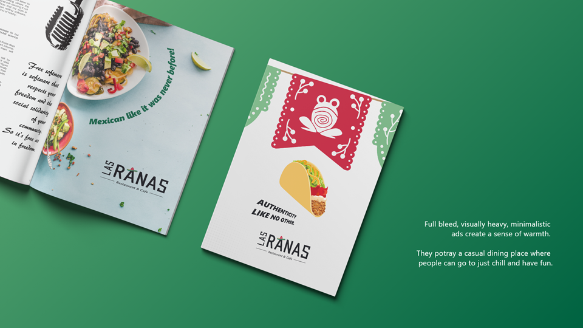
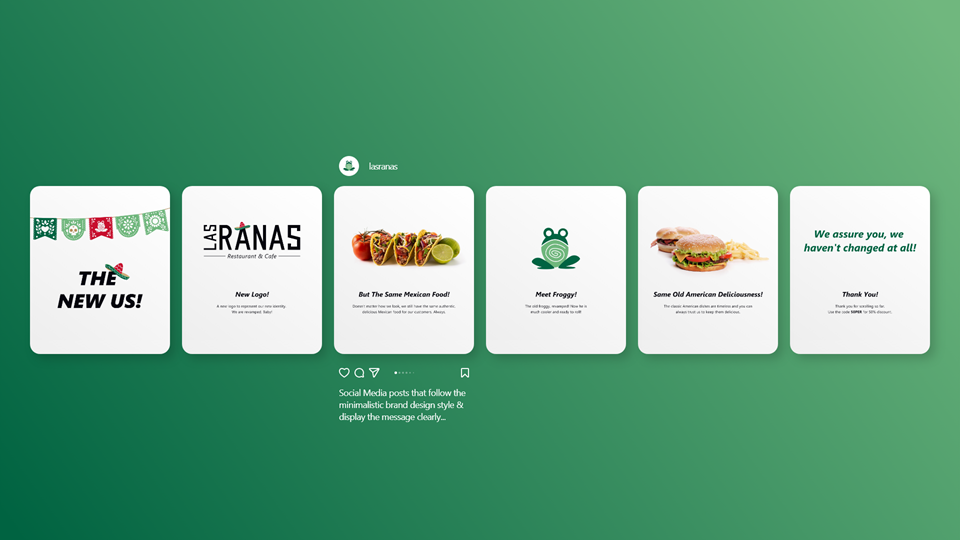
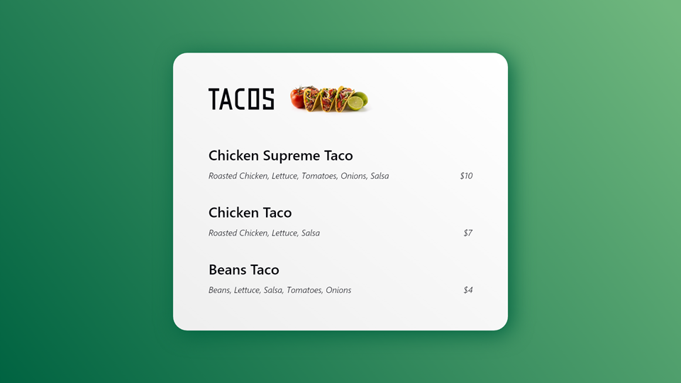
Mood-boarding
I decided to start the process with some old-fashioned mood-boarding. The idea was to collect an array of elements that I could later pull from. The question I asked was: what are the elements of Mexico?
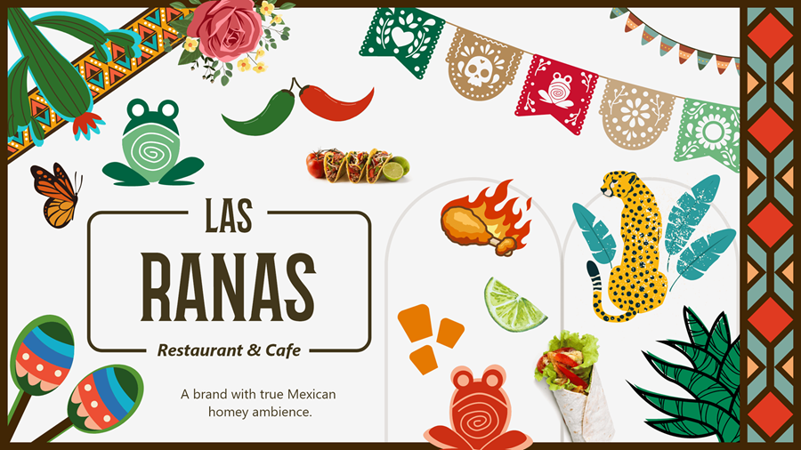
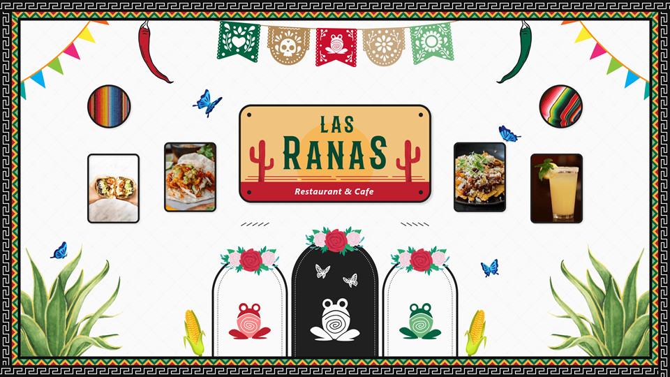
On the left, to be maximalist, I just threw in a lot of elements and it just became a mess. It wasn't curated at all, and hence, can't really be called maximalist. The right one was too curated. With its white background and properly aligned elements, it came out to be borderline minimalist.
Further in my research I noticed a prominent use of cactuses, flowers, and papel picado in graphic design, and rhombuses as decorative elements in the interior design of homes and restaurants.
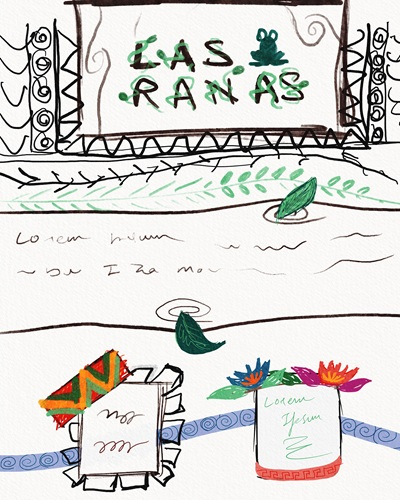

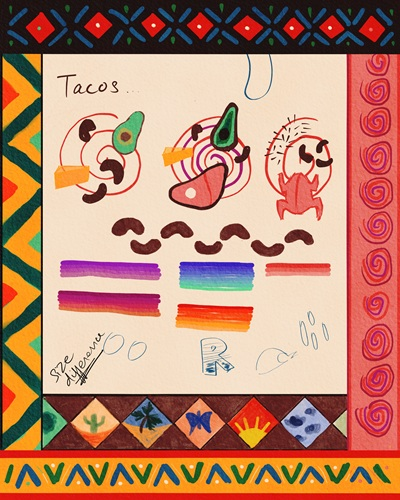
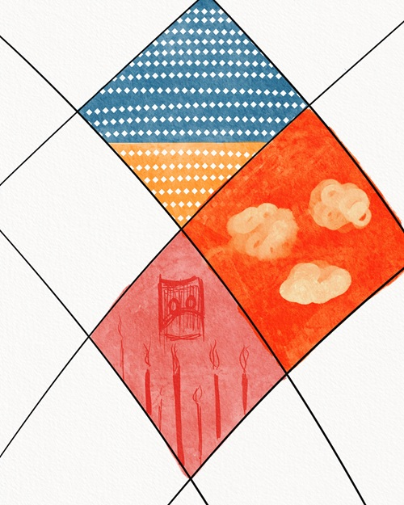
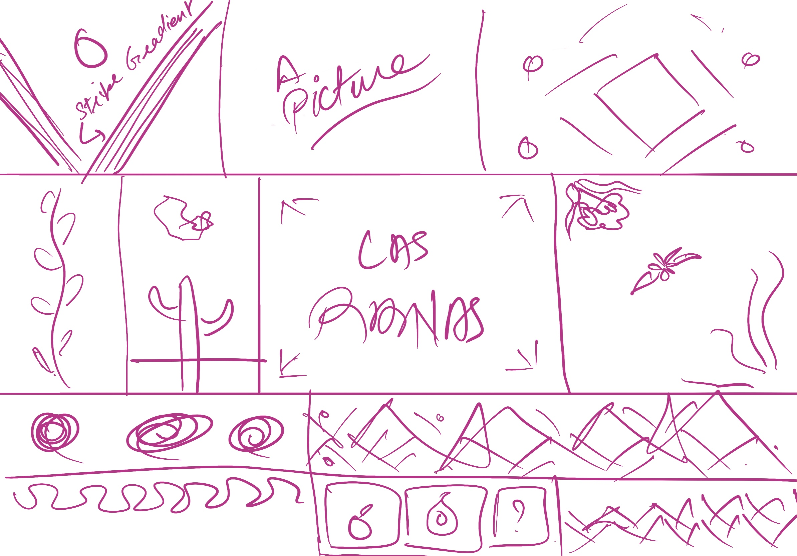
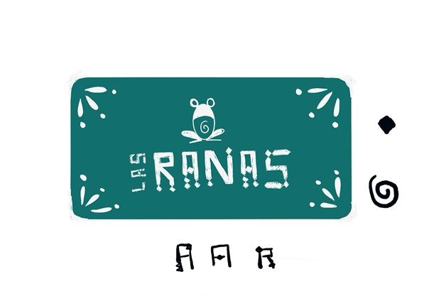
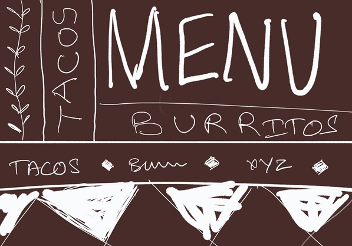
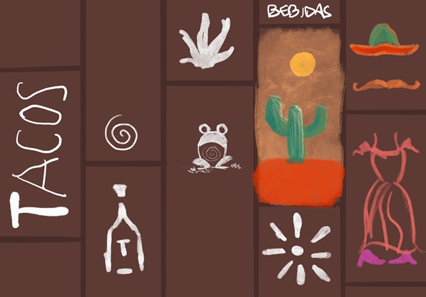
The Visual Layer
An important aspect of the design is the personality of the entity it represents, in this case the restaurant. Las Ranas is a restaurant that is community based. It is warm and welcoming, and invites you to come over with your friends and family to celebrate, watch games, and have a blast. It is also very Mexican and tries its best to provide a vibe that makes the customers feel that they are in Mexico, or right at home.
Besides the Mexican elements that cover the authenticity and the vibe, for the "warm and welcoming," I wanted to use a warm colour palette extracted from the visual culture of Mexico, and use a layout that naturally directs the eye to the important parts; like a guide to the user.
In the interior design of Mexican homes and restaurants, I noticed that the backdrop was predominantly either red, off-white, or wooden. Hence, I decided to use these colours for the same purposes.
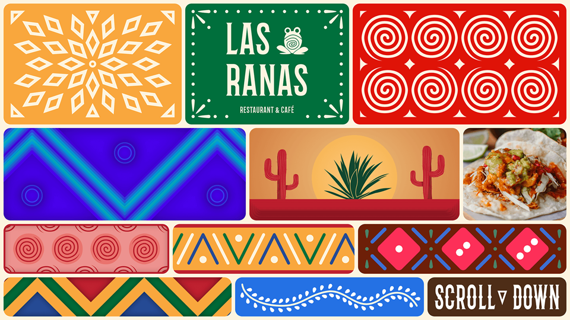
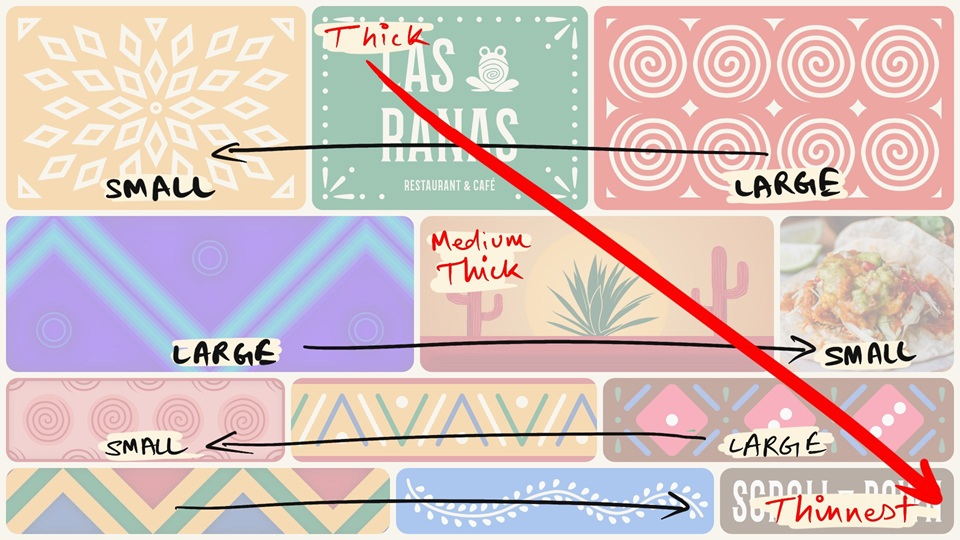
This is the first iteration of the landing page, inspired by the first sketch ideation of the same. The idea was to create independent layers that are hovering over one another. With the variation in length of these blocks, I intended to create a sense of direction, an illusion on movement. And, with the variation in thickness from top to bottom, I intended to guide the user's eye to in the same direction. The idea was to bring user's attention from the logo to the scroll button. What follows the scroll button is as follows:
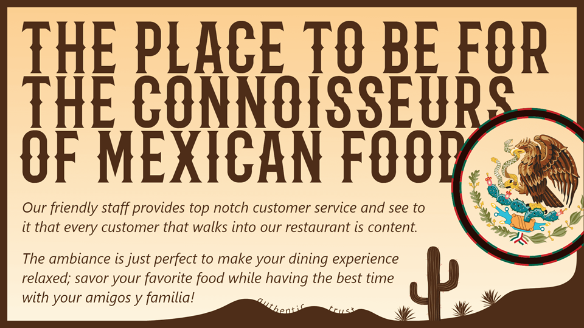
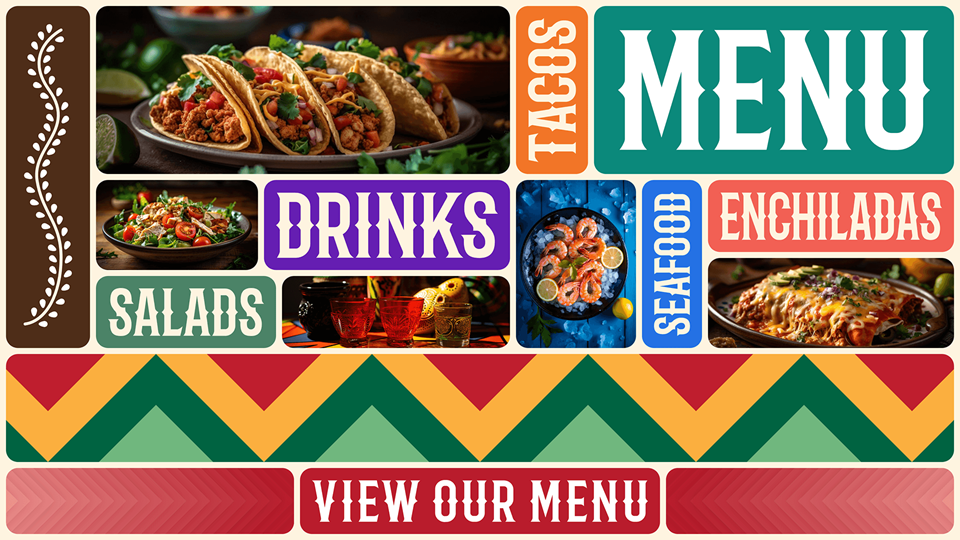
The second section of the page tells the users about the values of the restaurant and the third section gives a glimpse of the menu. The Menu section here follows the rules of the landing page loosely. The goal here was to create a stacked pattern to keep the user's eye in the area so that they focus on the images of the food. The triangle pattern then again guides the user's eye to the action button.
While exploring designs, one isn't enough. After exploring an abstract landing page, I wanted to try to come up with an illustrative scenery that makes people feel that they are at a landscape in Mexico.
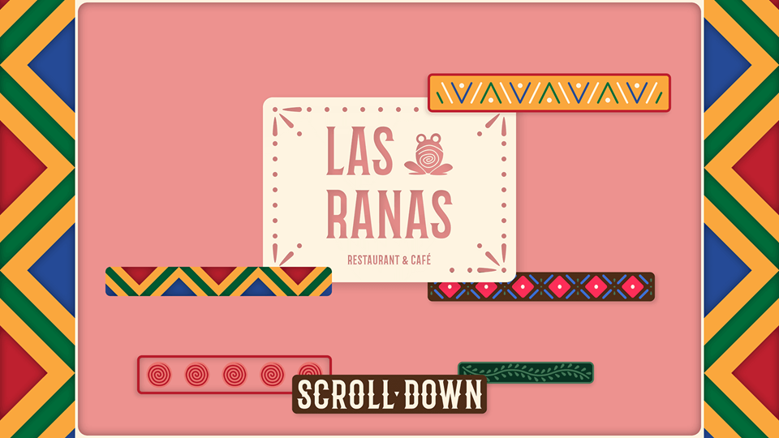
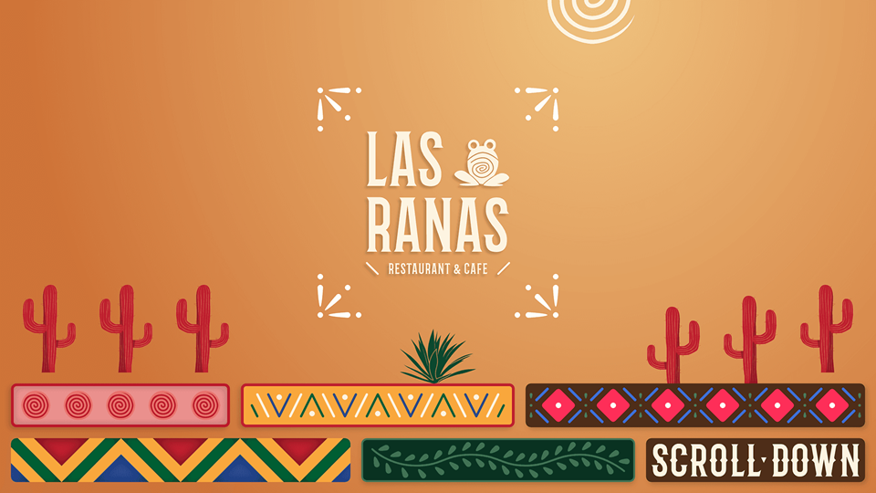
The above two images were my failed attempts to achieve a scenic landing page. In the first image, I wanted to create a parallax effect in which the elements were hovering at different planes, and in the second I wanted to create a desert with the spiral acting as a sun. The second image was still some progress and I went further in that direction. Eventually, I was successful and came up with the following design (prototype).
In the above prototype, you can also see that I have updated the second section of the page. I chose to keep the third section exactly the same as I believe it functions well as it is. I did, however, add a reviews section which is based on a real-world style of interaction, supporting the essence of maximalism.
The important thing to notice here is that the web pages illustrated above are only visually maximalist. To better understand this, let's take Maudies.com, a tex-mex website. Even though this website is maximalist in it's design, it is only visually maximalist. When it comes to the interface of this website, it is still minimalist.
Doesn't matter how much you decorate a button, it is still a button.
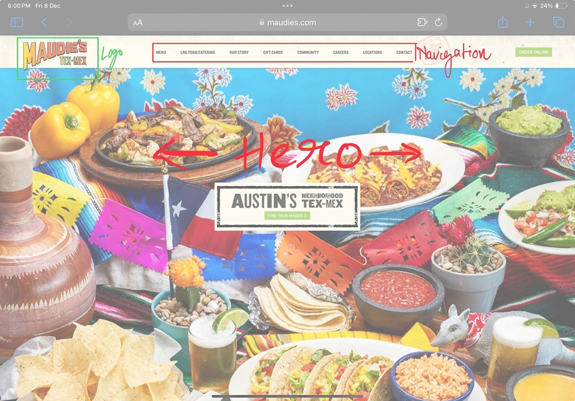
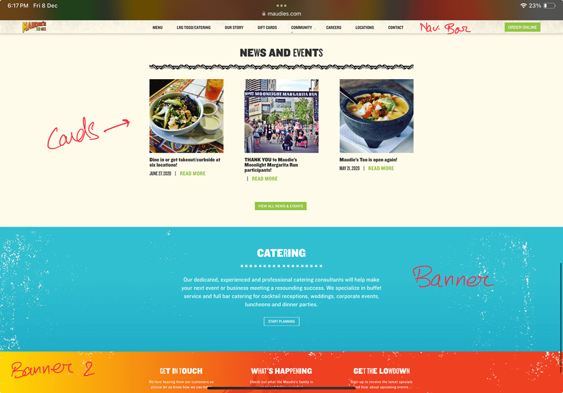
As you can see in the images above, the website still follows minimalist design ideology.
Visual experience is only a part of the overall user experience. So, if the visual layer is maximalist, but the interface layer is minimalist, the overall experience of the design will also be minimalist. On the contrary, if the visual layer is minimalist but the interface layer is maximalist, the overall experience will be maximalist.
This happens because the visual layer is built over the interface layer, which is why the latter gets an upper hand. Hence, whether minimalist or maximalist, the visual layer alone can not change the overall experience of the user. To create an overall maximalist experience, we need to alter the interface layer.
The Interface Layer
The interface layer is the wireframe or the structural layer or the design where the UI elements are put in place. It is the blueprint of a website or an app. It is the interface between the system and the user. This is where the interaction happens.
For this project, I chose to redesign the order-online page maximally. Ordering food online is an highly interactive process with lots of elements and choices, and it seemed like a fun challenge.
Most websites follow the click-next/click-next-page approach (like Chipotle) or an endless scroll approach (like Subway). When a user lands on the ordering page, they have a picture in mind of what they want to eat. Using the mentioned approaches with too much clicking or scrolling to select items from an endless list progressively takes the users away from the mental picture of the food they had in mind, leaving them worn out and lost.
I wanted my design to bring all the interactive elements to just one screen, to fit the entire process into just one screen, so that the users can stay focused and not lose the mental picture of the food (as it will be right there, in the center of the screen, helping build connection with the user).
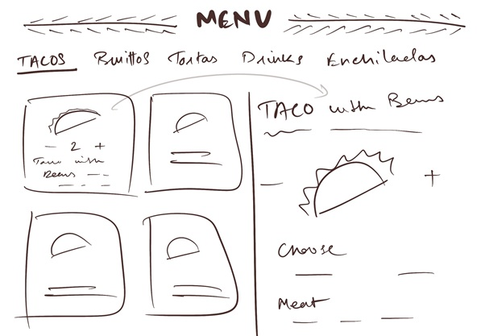
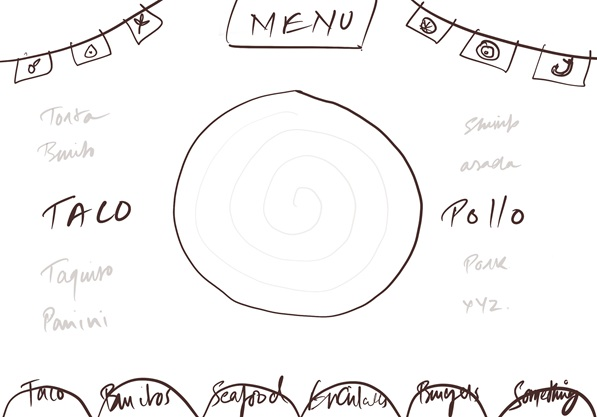
The left image was my first iteration of the menu design, but I felt that it resembled current designs a little, so I discarded it. The second iteration, however, I felt was something new and chose to continue with it.
The following prototype showcases the process of ordering a Simple Torta with Asada and Nachos. To start, scroll the carousel and select Torta.
General rules of maximalism tells us to include more colours, patterns, shapes, borders, etc. Basically, more is more, so add more. Following these rules, the above design includes multiple colours, shapes, fonts, and border designs, but in an organized and "curated" fashion. Hence, by definition, the visual layer is maximalist.
Following the more-is-more rule, the above design includes multiple types of interactive elements like scrolls, toggles, buttons, hover, and micro-interactions/micro-animations. The design brings the entire process of ordering food into a single screen, with almost all the information visible at once. It gives the user a holistic view of their order. With all the information visible in one view, they can focus easily.
Visual representation of food, with an option to turn them on/off helps build connection with the mental picture of the food the user had in mind. In addition, the visual design elements (the arrows on the top, bottom, and right side of the scrolls) are facilitating the interactive process. All in all, I believe this interface to be maximalist.
With both visual and interface layers of this design being maximalist, I can say that it provides an overall maximalist experience.
The Conclusion
Maximalism is a vast category that has different meanings in different scenarios. It has existed for hundreds of years and will continue to evolve with time. UI UX Design is a relatively new field when compared to Maximalism. This was my effort to explore what maximalism would look like in this domain.
As per the discussion above, it is evident that maximalism in UI UX Design can be done at two separate layers: visual and interface.
There can be scenarios where designs do not have/require a lot of interaction. In that case, maximalist experience can be achieved by altering the interface layer. In interaction-heavy scenarios, the interface layer needs to be altered to achieve maximalist experience, irrespective of the visual layer.
We are free to use any degree of maximalism in each layer and create combinations. We can have a maximalist UI with a minimalist user experience, or minimalist UI with a maximalist user experience. The goal here is to not limit ourselves to the minimalist standards of the industry and let the creativity flow.